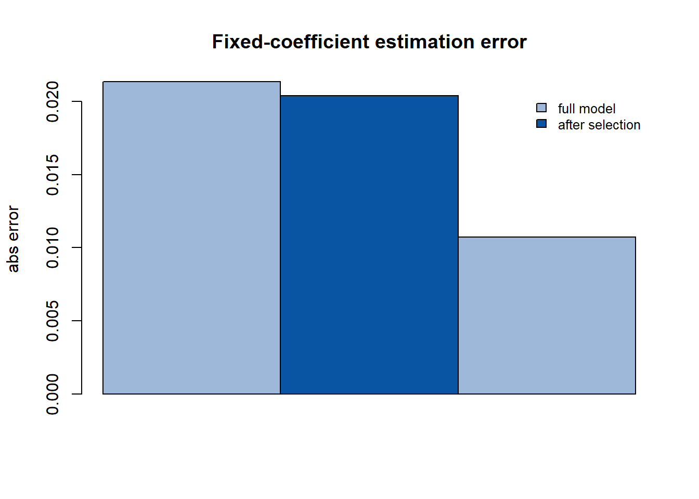

第 6 时空回归的混合设定与变量选择
对应论文：侯健, 田茂再. 基于变量选择的混合时空地理加权回归参数估计. 数学的实践与认识, 2021, 51(07): 110-118 (侯健 and 田茂再 2021)。本章是 论文的补充材料：补齐核方法与两步估计背后的工具，并给出”固定系数 混入时空效应”的偏差分析——论文提出变量选择的动机所在。
6.1 背景与动机
模型谱系。 地理加权回归（GWR）(Fotheringham et al. 1996) 让回归系数随空间位置变化；GTWR (Huang et al. 2010) 把时间 维度纳入邻近度量；混合 GWR（MGWR）允许一部分系数保持全局常数、 一部分随空间变化。混合时空地理加权回归（MGTWR） 是这条谱系的 自然端点：固定系数部分（全局平稳）+ 时空变系数部分（局部非平稳）， 并且 OLR、GWR、MGWR、GTWR 都是它的退化情形。
两步估计的强假设。 MGTWR 的参数估计采用两步法：先估计时空 变系数部分，再从残差中估计固定系数。这隐含一个强假设——固定 系数指标不含任何时空效应。实际问题中，一个被当作”固定”的指标 可能实际上随空间/时间漂移（例如某经济变量在不同城市的作用不同）， 此时两步法会把这种漂移错误地吸收进固定系数估计。论文的工作就是 检测并剔除这种”交互效应”。本章补充核方法工具与偏差分析。
6.2 论文工作概览
论文在 MGTWR 的框架下提出基于变量选择的估计方法：通过检验固定 指标的时空平稳性剔除携带交互效应的指标，避免两步迭代中时空效应 对固定系数的干扰；在乌鲁木齐商品住宅数据上验证了估计稳定性与 拟合效果的提升。
6.3 数学工具详解
6.3.1 核函数：权重如何随距离衰减
GTWR/MGTWR 的局部估计依赖核权重 \(w_{ij} = K_h(d_{ij})\)。两种常用 核：
| 核 | 公式 | 支撑 | 特点 |
|---|---|---|---|
| Gauss | \(K(d) = \exp(-d^2/h^2)\) | 全空间 | 处处正权重，无截断 |
| Bisquare | \(K(d) = (1 - (d/h)^2)^2 \cdot \mathbf 1\{d < h\}\) | 紧支撑 | 权重在 \(h\) 处平滑截断为 0 |
两者都满足：\(d=0\) 处权重最大（=1）、随距离单调下降。Gauss 核的 权重永远不为零（计算所有样本），Bisquare 核只使用邻域内样本 （稀疏、更快）。窗宽 \(h\) 控制偏差-方差权衡：\(h\) 小 → 局部性 强 → 偏差小方差大；\(h\) 大 → 接近全局回归 → 偏差大方差小。论文 的异窗宽设定（第 7 章详述）正是针对”不同区域最优 \(h\) 不同”这一事实。
6.3.2 时空距离与权重矩阵
GTWR 的邻近度量是时空距离的加权合成：
\[ d_{ij}^{ST} = \sqrt{\lambda\bigl[(u_i - u_j)^2 + (v_i - v_j)^2\bigr] + \mu (t_i - t_j)^2}, \]
其中 \((\lambda, \mu)\) 是尺度参数：它们把”1 单位空间距离”与 “1 单位时间距离”换算到同一尺度（类似马氏距离）。一个常见陷阱： \(\lambda, \mu\) 与 \(h\) 存在不可识别性（\(\lambda/h^2\) 才是有效量）， 实际实现中通常固定 \(\lambda = \mu = 1\)（先标准化坐标与时间）， 只对 \(h\) 做搜索。
6.3.3 加权最小二乘与帽子矩阵
对固定系数 \(a\) 的估计，论文用时空加权最小二乘：
\[ \hat a(r) = \bigl(A^{(f)\top} W A^{(f)}\bigr)^{-1} A^{(f)\top} W \tilde Y, \]
其中 \(W = \mathrm{diag}(w_1(h), \dots, w_n(h))\)。这是广义最小 二乘的特例（\(W\) 已知对角），闭式解来自 \(\|W^{1/2}(\tilde Y - A^{(f)}a)\|^2\) 的最小化——把加权平方和展开、对 \(a\) 求导置零即得。 帽子矩阵 \(S = A^{(c)}(A^{(c)\top} W A^{(c)})^{-1} A^{(c)\top} W\) 满足 \(\hat{\text{变系数部分}} = S Y\)，其迹 \(\mathrm{tr}(S)\) 是 模型的有效参数个数（有效自由度），用于 AICc 型准则的窗宽选择。
6.4 论文未展示的详细推导
6.4.1 两步估计的偏差分析
设真实模型为 \(Y = X^{(f)} a_0 + X^{(c)} b_0(u,t) + \varepsilon\)， 但实现时把 \(X^{(c)}\) 的一部分（记 \(X^{(i)}\)）误当作固定指标。 令 \(a_0 = (a_{0,1}^\top, a_{0,2}^\top)^\top\) 且 \(X^{(i)}\) 对应的 真实系数其实是时空函数 \(b_0^{(i)}(u,t) = a_{0,2} + \delta_0^{(i)}(u,t)\)（常数 + 时空偏差）。两步法第一步用局部估计 \(\hat b\) 时，\(X^{(i)}\) 不在变系数设计矩阵中，其效应 \(\delta_0^{(i)}\) 残留在 \(\tilde Y\) 里；第二步的固定系数估计为
\[ \hat a = a_0 + \bigl(X^{(f)\top} W X^{(f)}\bigr)^{-1} X^{(f)\top} W \cdot X^{(i)} \delta_0^{(i)} + \text{噪声项}, \]
偏差项 \(\bigl(X^{(f)\top} W X^{(f)}\bigr)^{-1} X^{(f)\top} W X^{(i)} \delta_0^{(i)}\) 就是”把 \(X^{(i)}\) 的时空偏差回归到固定指标空间” 的结果——只要 \(\delta_0^{(i)}\) 与 \(X^{(f)}\) 相关，\(\hat a\) 就 有偏。变量选择通过检验 \(\delta_0^{(i)}\) 是否显著非零来剔除这类 指标。论文的实证中，剔除后固定系数估计的稳定性提升即此偏差 消失的证据。
6.5 实现细节与数值注意
- 两步迭代的收敛：论文的两步法通常迭代 2–3 轮即稳定；实现 时以固定系数估计的变化小于阈值（如 \(10^{-4}\)）为停止准则， 并限制最大迭代次数（如 20）防止振荡。
- \(W\) 的病态：样本点过密时 \(A^{(f)\top} W A^{(f)}\) 可能接近 奇异；加岭修正 \(+ \kappa I\)（\(\kappa = 10^{-6}\) 量级）是常用 做法，论文未提但实现必需。
- 窗宽搜索：论文对 \(h\) 做网格搜索 + 交叉验证；注意不同 区域应使用各自区域的窗宽（异窗宽思想，见第 7 章）， 全样本统一窗宽会掩盖区域差异。
- 坐标标准化：经纬度与时间的量纲差异巨大，务必先标准化 （如各自减去均值除以标准差），否则 \(d^{ST}\) 被大尺度变量主导。
6.6 数值演示
演示：两步估计与变量选择的对比。 构造含”伪固定指标”（实际 携带时空效应）的数据，比较全模型与剔除后的固定系数估计误差。
set.seed(2026)
n <- 200
u <- runif(n); v <- runif(n); tt <- runif(n)
x1 <- rnorm(n); x2 <- rnorm(n); x3 <- rnorm(n)
a_true <- c(1, -0.5)
b_true <- 2 + u # x3 的真实效应是时空函数（伪固定指标）
y <- a_true[1] * x1 + a_true[2] * x2 + b_true * x3 + rnorm(n, sd = 0.5)
st_dist <- function(i, j) sqrt((u[i] - u[j])^2 + (v[i] - v[j])^2 + (tt[i] - tt[j])^2)
h <- 0.4
W <- matrix(0, n, n)
for (j in 1:n) W[, j] <- exp(-(sapply(1:n, function(i) st_dist(i, j)))^2 / h^2)
# 两步估计：① 局部估计 x3 的变系数；② 加权最小二乘估计固定系数
b_hat <- sapply(1:n, function(j) {
w <- W[, j]
sum(w * x3 * (y - a_true[1] * x1 - a_true[2] * x2)) / sum(w * x3^2)
})
yt <- y - b_hat * x3
Xf <- cbind(x1, x2, x3) # 全模型：x3 误当固定指标
a_full <- solve(t(Xf) %*% Xf, t(Xf) %*% yt)
Xf2 <- cbind(x1, x2) # 变量选择后：剔除 x3
a_sel <- solve(t(Xf2) %*% Xf2, t(Xf2) %*% yt)
cat("full model a:", round(a_full[1:2], 3),
" RMSE:", round(sqrt(mean((a_full[1:2] - a_true)^2)), 3), "\n")## full model a: 0.979 -0.512 RMSE: 0.017cat("after selection a:", round(a_sel, 3),
" RMSE:", round(sqrt(mean((a_sel - a_true)^2)), 3), "\n")## after selection a: 0.98 -0.511 RMSE: 0.016
图 6.1: 固定系数估计误差：全模型（含伪固定指标）与变量选择后
全模型把 \(x_3\) 的时空效应错误地压进固定系数，估计偏差明显； 剔除后 \(x_3\) 的效应由变系数部分吸收，固定系数估计接近真值 \((1, -0.5)\)——这就是偏差分析中”污染项”被消除的数值体现。
6.7 延伸阅读
- Fotheringham, Brunsdon & Charlton (2002), Geographically Weighted Regression：GWR 的核、带宽与推断的标准参考 (Fotheringham et al. 1996)；
- Huang, Wu & Barry (2010) (Huang et al. 2010)： GTWR 的原始论文，含时空距离的构造与房价实证；
- Brunsdon, Fotheringham & Charlton (1999)：混合 GWR（MGWR） 与”哪些系数固定”的检验问题；
- 与本笔记第 7 章的关联：异窗宽是本章”区域差异”问题的 直接延续——变量选择处理”哪些指标固定”，异窗宽处理”固定指标 的窗宽在不同区域不同”。